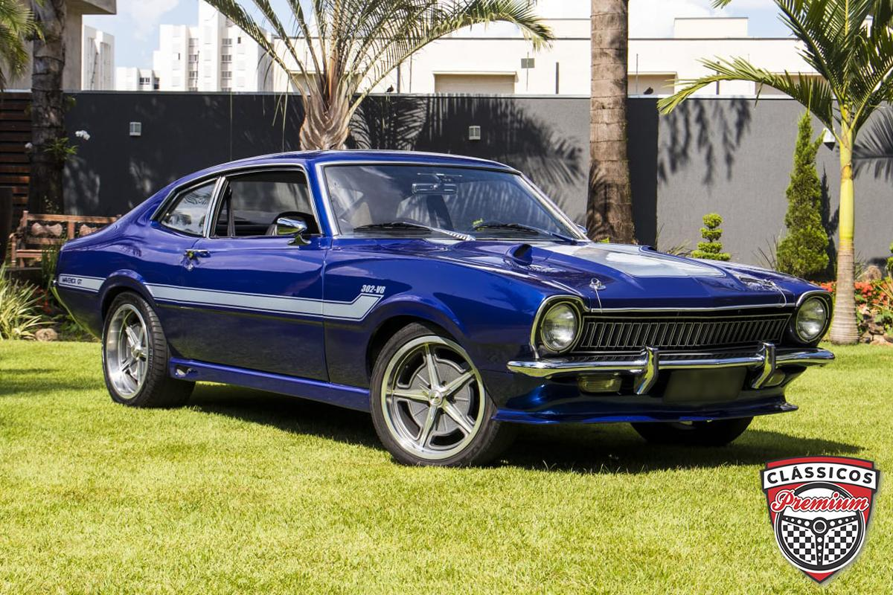

FORD MOTOR COMPANY
FORD: UMA DAS MAIORES FABRICANTES DE VEÍCULOS DO MUNDO:

A Ford Motor Company é uma das fabricantes de automóveis mais tradicionais do mundo, fundada por Henry Ford em 1903. Atualmente, a marca passa por uma grande reestruturação global focada em tecnologia, veículos comerciais e modelos eletrificados.
FORD NO BRASIL:
Desde que encerrou a sua produção nacional em 2021, a Ford mudou sua estratégia no mercado brasileiro, operando estritamente como importadora de veículos premium, SUVs e picapes:
- PICAPES - Destacam-se a Ford Ranger (referência no segmento com motores V6), a picape intermediária Maverick e a picape de grande porte F-150.
- SUVs E ESPORTIVOS - O portfólio inclui o Territory, o Bronco Sport e o lendário esportivo Mustang.
- REDE E SERVIÇOS - A marca mantém sua rede de concessionárias ativa (como a Ford Barigüi e Ford CAOA) fornecendo serviços e peças de reposição garantidos.
CENÁRIO GLOBAL:
Globalmente, a Ford reorganizou suas divisões internas na iniciativa Ford+, criando uma nova estrutura de Criação e Industrialização de Produtos para acelerar o desenvolvimento de softwares e a sua plataforma de Veículos Elétricos Universais (UEV). Apesar dos custos de reestruturação do setor elétrico que impactaram os balanços passados, a empresa apresentou resultados financeiros sólidos no início de 2026, impulsionada principalmente pela divisão de frotas e comerciais, a Ford Pro.

Diego Rafael Higa (Santos, 18 de março de 1997), é um piloto brasileiro de automobilismo, especialista em Drift. Apesar da decisão de não continuar na Formula Drift, Diego é referência em Drift no Brasil e ficou conhecido por ter sido campeão da série Hyperdrive da Netflix, em 2019. Vencedor do Capacete de Ouro de 2019, da Confederação Brasileira de Automobilismo e possui mais de 38 troféus em sua carreira.
Atualmente, compete no SuperDrift Brasil com seu Nissan 350Z, preparando-o na NSC Garage, em Santos e é dono da "Escola de Drift Diego Higa", na qual dá aulas usando seu estílo único de Drift.